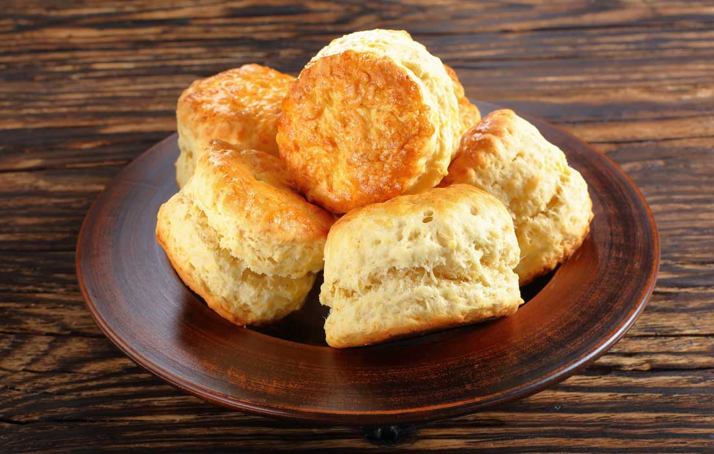

Sugar Free Scones!

Old Fashioned Sugar Free Scones!
Give these quick and easy scones a try. They only take ten minutes and are easy to customiese for every occasion. For a midday treat we add scones, for a side dish for dinner we add garlic and herbs. The only limit is your imagination!
Ingredients
- 3 c. flour
- 2 Tbsp butter
- Pinch of salt
- 1 cup of milk
Steps
- Combine salt, Flour and Butter in a large bowl. Mix the butter in with your fingers until the it forms a fine crumb.
- Add milk and stir with a wooden spoon or a dough hook until just combined.
- Turn out onto a floured surface and kneaduntil it begins to form a ball. Be careful not to overknead.
- Let it rest for ten minutes.
- Gently roll dough out with your hands and cut into 12 equal sixed pieces.
- Arrange on a baking tray and cook at 160c for 10 minutes.
- Enjoy!